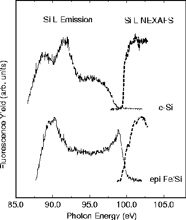

SXF Si L-emission spectra (solid line) and Si L-edge NEXAFS
(dashed line) for the crystalline Si reference film and for
the epitaxial (Fe40Å/Si14Å)x40 multilayer on MgO.
The crossing of the valence band data obtained from SXF and
the conduction band data obtained from NEXAFS demonstrates
that the silicide spacer layer is metallic.